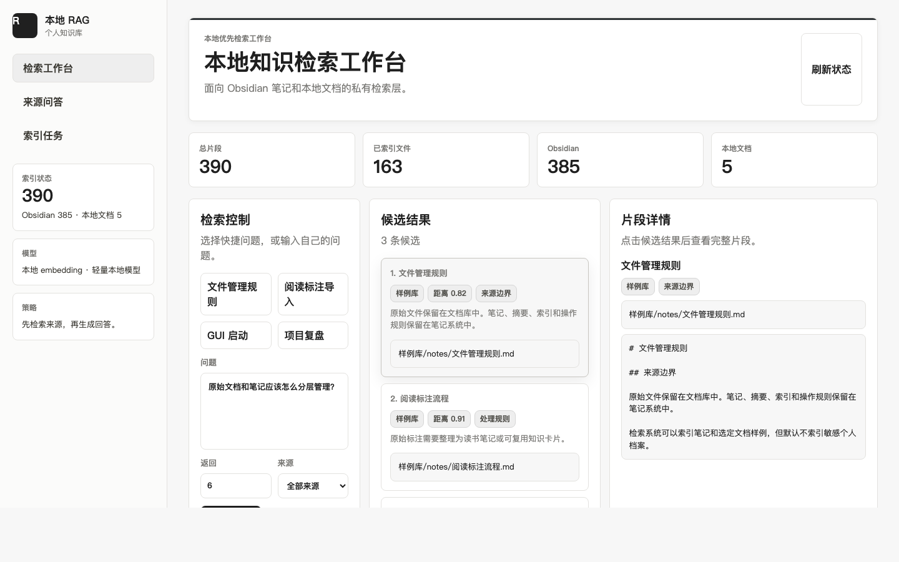
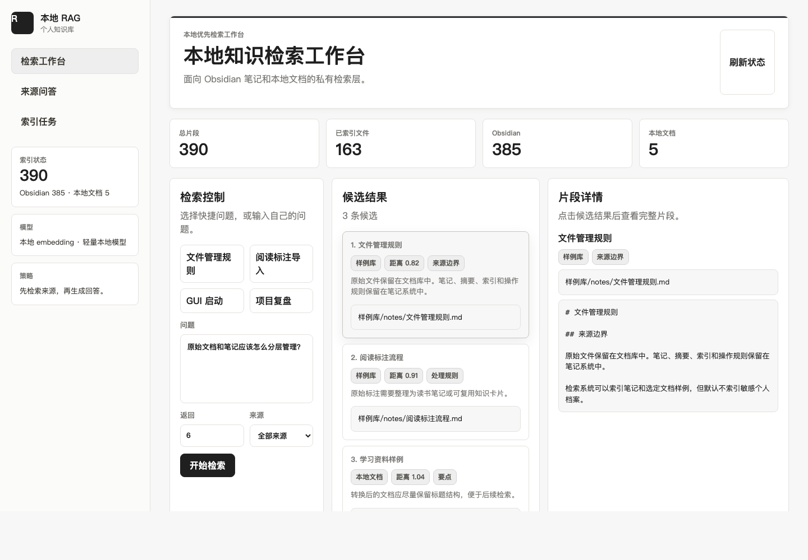
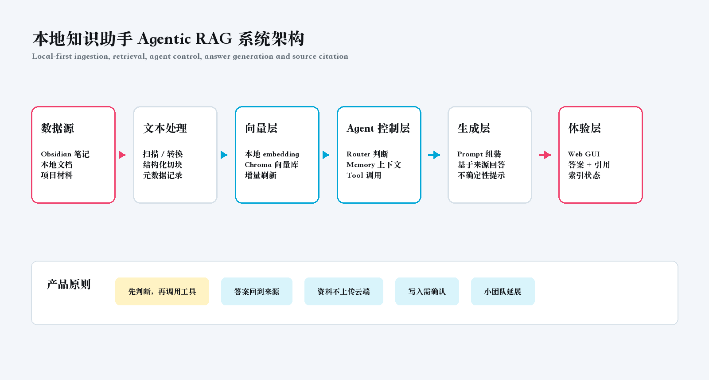
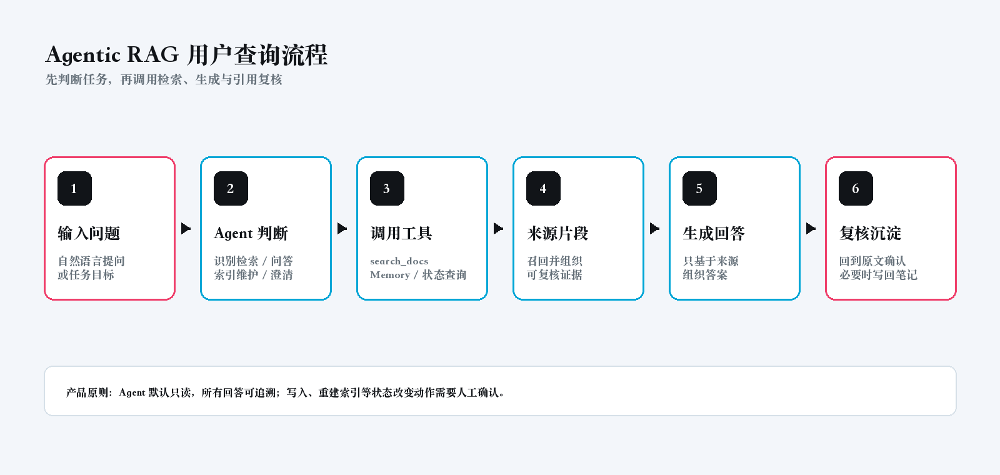
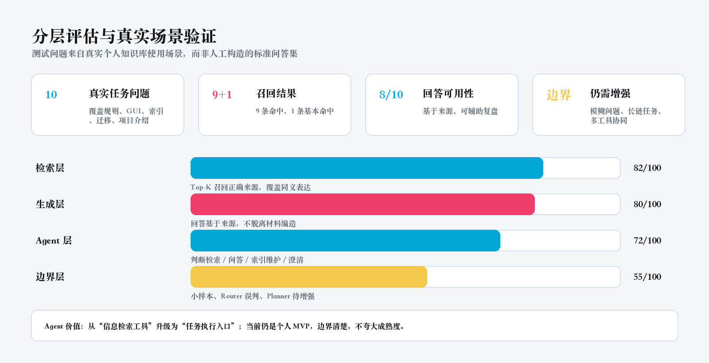

Project 01 · Portfolio Page
本地知识助手（RAG → Agentic RAG）
从“语义检索工具”升级为“具备决策能力的 AI 知识助手”。
让用户从“找文件”转变为“直接获取有依据的答案”：V1 用 RAG 解决资料召回与引用溯源，V2 用 Router、Tool Calling 和 Memory 把系统升级为任务执行入口。
RAG
Agent
Tool Calling
Memory
本地部署
Agentic RAG

TL;DR
项目速览
不看全文也能理解 80%：问题、方案、结果和亮点都围绕“从找文件到找答案 + 找依据”。
- 知识分散，靠关键词找不准。
- 直接问 LLM 容易无依据。
- 连续任务缺少上下文。
- V1：RAG 解决检索与引用。
- V2：Agent 解决决策与连续使用。
- 默认本地部署与只读边界。
- 10 条真实任务问题。
- 9 条命中，1 条基本命中。
- 回答可用性约 8/10。
- RAG 工具化。
- Agent 决策层。
- 可解释执行过程。
Problem
问题定义
用户的问题不是“如何问 AI”，而是如何让 AI 在本地知识中“找得到 + 信得过 + 用得顺”。
资料分散在 Obsidian、项目材料和本地文档中，关键词搜索无法覆盖同义表达和跨文件线索。
LLM 回答必须绑定来源片段，让用户能回到原文复核，而不是只接受模型结论。
embedding、向量库、缓存和回答链路留在本机，适合私人知识管理场景。
用户会连续追问、对比和整理项目，系统需要判断任务类型并承接最近上下文。
V1
V1：基础 RAG 方案
先解决最核心的问题：让本地资料可检索、回答可追溯、工具可日常使用。
V1 是一个本地 RAG 工作台：完成文档导入、向量检索、带引用回答和 Web GUI。
- 本地 embedding + Chroma 向量检索。
- 基于召回片段生成回答，并展示引用来源。
- 支持 Obsidian 笔记和本地文档的统一检索。
- 提供 GUI，降低命令行使用门槛。

检索工作台
先找资料，再组织答案。

带引用回答
回答和来源绑定，降低黑盒感。
Why Upgrade
V1 为什么不够
V1 已经能回答问题，但还不是一个真正“会判断”的助手。
所有问题都强制检索
无论是查资料、解释概念还是延续上一轮问题，都走同一条链路。
没有任务判断
系统只能被动检索，不能识别用户是在问答、总结、对比还是整理项目。
没有上下文记忆
每轮对话相对独立，连续追问时用户需要反复补背景。
V2
V2：Agentic RAG（Agent 知识助手升级）
从“用户提问，系统回答”升级为“用户提出目标，系统判断路径并调用工具完成任务”。
LLM 不再只是生成答案，而是先判断要不要查资料，再决定如何完成任务。Agent 的引入，本质上是把系统从“信息检索工具”升级为“任务执行入口”。
User Query 先进入 Router；需要依据时调用 `search_docs` Tool；再结合 Memory 生成最终答案；Agent Core 负责整条链路调度。
先判断，再决定是否检索
区分 direct 和 retrieve，让流程更贴近真实意图。
把检索变成标准能力
将 RAG 封装成 `search_docs`，为后续多工具扩展留接口。
支持连续追问
保留最近上下文，减少重复输入，提升连续任务体验。
负责调度整条链路
连接决策、工具调用、上下文组装和最终回答。

系统架构
从数据源、文本处理、向量层到 Agent 控制层、生成层和体验层。

查询流程
User → Router → Tool(RAG) → Answer → Memory，先判断任务，再调用工具。
输入问题或任务目标。
判断是 direct 还是 retrieve。
需要依据时调用 `search_docs`。
结合来源和上下文组织答案。
保存最近对话，支持下一轮继续。
Evaluation
评估体系：数据 + 方法
测试问题来自真实个人知识库使用场景，而非人工构造的标准问答集。评估重点不是回答是否流畅，而是来源是否召回、回答是否基于来源、Agent 是否判断对任务类型。
覆盖协作规则、GUI 使用、索引维护、迁移和项目介绍。
9 条命中，1 条基本命中，基本命中表示召回方向正确但仍需筛选。
人工判断是否基于来源、是否能辅助复盘。
检索、问答、索引维护和澄清类任务。

分层评估
检索层、生成层、Agent 层和边界层同时看，避免只看模型输出是否好看。
- 检索层：Top-K 是否召回正确来源。
- 生成层：回答是否基于来源、是否避免无依据扩写。
- Agent 层：是否正确判断检索、问答、索引维护或澄清。
Comparison
对比传统方案与 V1/V2 演进
本质变化是从“找文件”升级为“找答案 + 找依据”，再进一步升级为“会判断路径的任务执行入口”。
| 维度 | 传统方式 | 本系统 |
|---|---|---|
| 找资料 | 关键词搜索、按目录翻文件。 | 自然语言语义检索，覆盖同义表达和跨文件线索。 |
| 找答案 | 打开多个文件后手动拼结论。 | 先召回来源，再组织可复核答案。 |
| 可信度 | 依赖用户记忆和人工判断。 | 回答绑定来源片段，可回到原文确认。 |
| 连续任务 | 每次重新搜索、重新交代背景。 | Memory 保留最近上下文，Router 判断是否继续检索。 |
| 维度 | V1：基础 RAG | V2：Agentic RAG |
|---|---|---|
| 架构 | 固定的 Retrieve → Generate 链路。 | Query → Router → Tool / Direct → Memory → Answer。 |
| 决策能力 | 默认每次检索，没有任务判断。 | 先判断是否检索，再决定调用哪条路径。 |
| 用户体验 | 更像一个带引用的知识检索工具。 | 更像一个能理解上下文、会判断的知识助手。 |
Value
用户价值
用户不再需要记住“文件在哪”，只需要表达“我想要什么”，系统就能返回有依据的答案。
- 信息获取方式从“翻目录和关键词搜索”变成“按语义和任务目标获取信息”。
- 回答信任感从“模型说了什么”变成“模型说了什么，以及依据在哪里”。
- 多轮体验从“每轮重复背景”变成“系统能接住上文继续做”。
- 系统角色从“静态检索问答”升级为“动态决策与任务执行入口”。
- 扩展方式从“继续堆功能”变成“通过 Tool 接入新能力”。
- 风险控制从“能回答”推进到“可追溯、可解释、可控边界内执行”。
Design Thinking
关键设计思考
这一步解决的是意图识别问题，不只是流程优化。
RAG 被封装成 Tool 后，项目才具备演进成多工具 Agent 的基础。
当前只读、不自动写回，是刻意做的产品取舍，不是能力缺失。
这个项目的重点不是“我做了一个 RAG Demo”，而是“我能说明为什么要从 RAG 演进到 Agent，以及这个升级给用户带来了什么变化”。
Limits & Next
限制与未来方向
这部分不是削弱项目，而是说明我知道系统边界在哪里，也知道下一步应该如何增强。
- 小样本验证规模有限，尚未覆盖复杂长链任务。
- Router 在问题意图模糊、上下文不足时仍可能误判任务类型。
- 多工具协同能力尚未引入完整 Planner、状态管理和失败回滚。
- 多工具 Agent：增加摘要、对比、索引更新和写回确认类工具。
- Planner 任务拆解：把复杂目标拆成可执行步骤。
- 多 Agent 协作：Research / Product / Content / Review 分工。
My Role
我的角色
- 问题定义与产品设计：明确目标用户、使用场景、核心问题和 MVP 范围。
- 系统架构拆解：完成从 V1 基础 RAG 到 V2 Agentic RAG 的演进设计。
- Agent 机制设计：拆分 Router、Tool、Memory、Agent Core。
- Prompt 设计：约束是否检索、如何基于来源回答。
- Demo 验证与评估体系：用真实任务问题验证检索、生成和 Agent 判断。
- 产品化表达与作品集封装：把技术实现转成面试可理解的产品案例。
Summary
一句话总结
这个项目最想展示的不是我会做一个 RAG，而是我能从真实问题出发，把它迭代成一个具备决策、工具调用和边界控制的 Agentic RAG 产品。